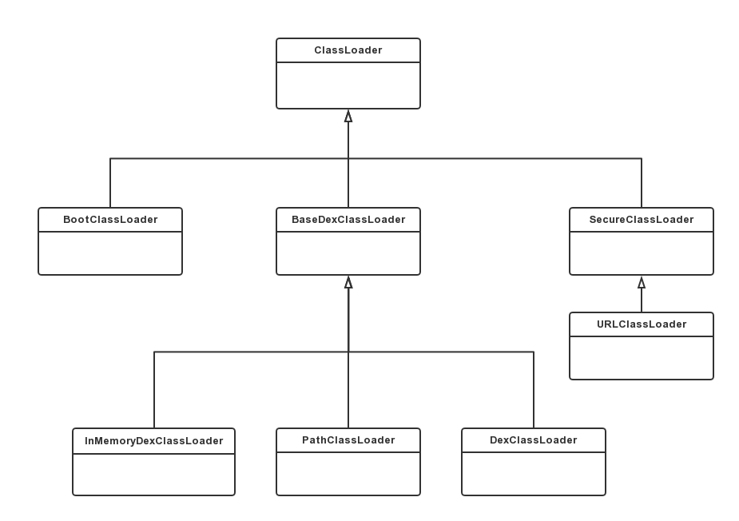

<activity android:name="com.recipe_app.client.RecipeActivity"
android:label="@string/title_gizmos" >
<intent-filter android:label="@string/filter_title_viewrecipe">
<action android:name="android.intent.action.VIEW" />
<!-- URIs that begin with "http://recipe-app.com/recipe" -->
<data android:scheme="http"
android:host="recipe-app.com"
android:pathPrefix="/recipe" />
<category android:name="android.intent.category.DEFAULT" />
<category android:name="android.intent.category.BROWSABLE" />
</intent-filter>
</activity>Frequently Asked Questions
我们知道Java中的ClassLoader可以加载jar文件和Class文件（本质是加载Class文件），这一点在Android中并不适用，因为无论是DVM还是ART它们加载的不再是Class文件，而是dex文件，这就需要重新设计ClassLoader相关类，我们先来学习ClassLoader的类型。
Android系统启动时会使用BootClassLoader来预加载常用类，与Java中的BootClassLoader不同，它并不是由C/C++代码实现，而是由Java实现的，BootClassLoade的代码如下所示。
libcore/ojluni/src/main/java/java/lang/ClassLoader.java
class BootClassLoader extends ClassLoader {
private static BootClassLoader instance;
@FindBugsSuppressWarnings("DP_CREATE_CLASSLOADER_INSIDE_DO_PRIVILEGED")
public static synchronized BootClassLoader getInstance() {
if (instance == null) {
instance = new BootClassLoader();
}
return instance;
}
BootClassLoader是ClassLoader的内部类，并继承自ClassLoader。BootClassLoader是一个单例类，需要注意的是BootClassLoader的访问修饰符是默认的，只有在同一个包中才可以访问，因此我们在应用程序中是无法直接调用的。
Android系统使用PathClassLoader来加载系统类和应用程序的类，如果是加载非系统应用程序类，则会加载data/app/目录下的dex文件以及包含dex的apk文件或jar文件，不管是加载那种文件，最终都是要加载dex文件，在这里为了方便理解，我们将dex文件以及包含dex的apk文件或jar文件统称为dex相关文件。PathClassLoader不建议开发直接使用。来查看它的代码：
libcore/dalvik/src/main/java/dalvik/system/PathClassLoader.java
public class PathClassLoader extends BaseDexClassLoader {
public PathClassLoader(String dexPath, ClassLoader parent) {
super(dexPath, null, null, parent);
}
public PathClassLoader(String dexPath, String librarySearchPath, ClassLoader parent) {
super(dexPath, null, librarySearchPath, parent);
}
}
PathClassLoader继承自BaseDexClassLoader，很明显PathClassLoader的方法实现都在BaseDexClassLoader中。从PathClassLoader的构造方法也可以看出它遵循了双亲委托模式，不了解双亲委托模式请查看 Android解析ClassLoader（一）Java中的ClassLoader 这篇文章。
PathClassLoader的构造方法有三个参数：
DexClassLoader可以加载dex文件以及包含dex的apk文件或jar文件，也支持从SD卡进行加载，这也就意味着DexClassLoader可以在应用未安装的情况下加载dex相关文件。因此，它是热修复和插件化技术的基础。来查看它的代码，如下所示。
libcore/dalvik/src/main/java/dalvik/system/DexClassLoader.java
public class DexClassLoader extends BaseDexClassLoader {
public DexClassLoader(String dexPath, String optimizedDirectory,
String librarySearchPath, ClassLoader parent) {
super(dexPath, new File(optimizedDirectory), librarySearchPath, parent);
}
}
DexClassLoader构造方法的参数要比PathClassLoader多一个optimizedDirectory参数，参数optimizedDirectory代表什么呢？我们知道应用程序第一次被加载的时候，为了提高以后的启动速度和执行效率，Android系统会对dex相关文件做一定程度的优化，并生成一个ODEX文件，此后再运行这个应用程序的时候，只要加载优化过的ODEX文件就行了，省去了每次都要优化的时间，而参数optimizedDirectory就是代表存储ODEX文件的路径，这个路径必须是一个内部存储路径。
PathClassLoader没有参数optimizedDirectory，这是因为PathClassLoader已经默认了参数optimizedDirectory的路径为：/data/dalvik-cache。
DexClassLoader的构造方法有四个参数：
DexClassLoader 继承自BaseDexClassLoader ，方法实现都在BaseDexClassLoader中。
运行一个Android程序需要用到几种类型的类加载器呢？如下所示。
ClassLoader loader = MainActivity.class.getClassLoader();
while (loader != null){
Log.i(TAG,loader.toString());
loader = loader.getParent();
}
首先我们得到MainActivity的类加载器，并通过Log打印出来，接着打印出当前类的类加载器的父加载器，直到没有父加载器终止循环。打印结果如下所示。
运行结果；
05-23 14:14:00.058 8121-8121/com.tuya.test.tuya_tinker_test I/MainActivity: dalvik.system.PathClassLoader[DexPathList[[zip file "/data/app/com.tuya.test.tuya_tinker_test-2.apk"],nativeLibraryDirectories=[/data/app-lib/com.tuya.test.tuya_tinker_test-2, /vendor/lib, /system/lib]]]
05-23 14:14:00.058 8121-8121/com.tuya.test.tuya_tinker_test I/MainActivity: java.lang.BootClassLoader@41f4b3b0
可以看到有两种类加载器，一种是PathClassLoader，另一种则是BootClassLoader。DexPathList中包含了很多apk的路径，其中/data/app/com.tuya.test.tuya_tinker_test-2.apk就是示例应用安装在手机上的位置。关于DexPathList后续文章会进行介绍。
和Java中的ClassLoader一样，虽然系统所提供的类加载器主要有3种类型，但是系统提供的ClassLoader相关类却不只3个。ClassLoader的继承关系如下图所示。

可以看到上面一共有8个ClassLoader相关类，其中有一些和Java中的ClassLoader相关类十分类似，下面简单对它们进行介绍：